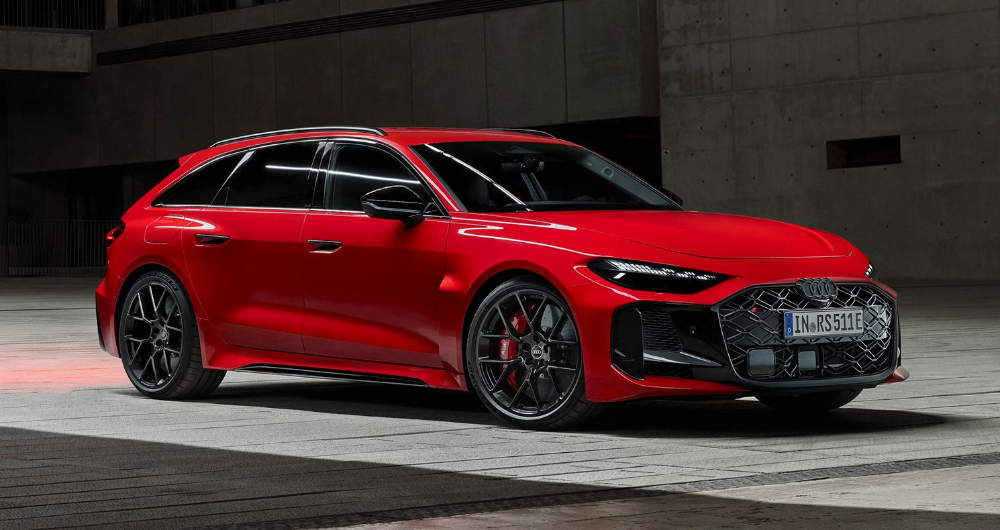

Audi Sport
Audi RS5
كوبيه رياضية عالية الأداء من Audi Sport تجمع بين القوة والفخامة.
كوبيه رياضية عالية الأداء من Audi Sport تجمع بين القوة والفخامة.

| المحرك | 2.9 لتر V6 توين تيربو |
| عدد الأسطوانات | 6 |
| القوة | 450 حصان |
| عزم الدوران | 600 نيوتن متر |
| ناقل الحركة | 8 سرعات Tiptronic |
| نظام الدفع | quattro رباعي |
| التسارع (0-100) | 3.9 ثانية |
| السرعة القصوى | 280 كم/س |
| عدد المقاعد | 4 |
| نوع الوقود | بنزين |